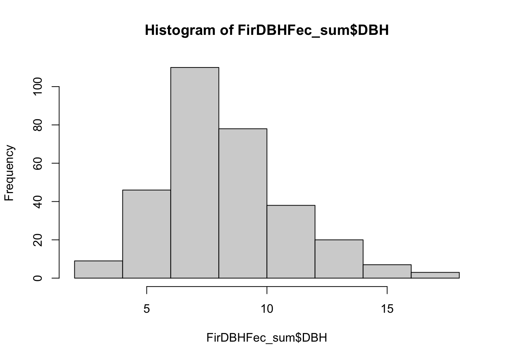
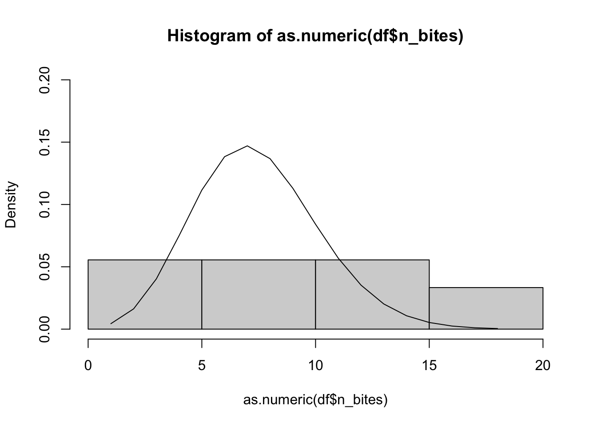
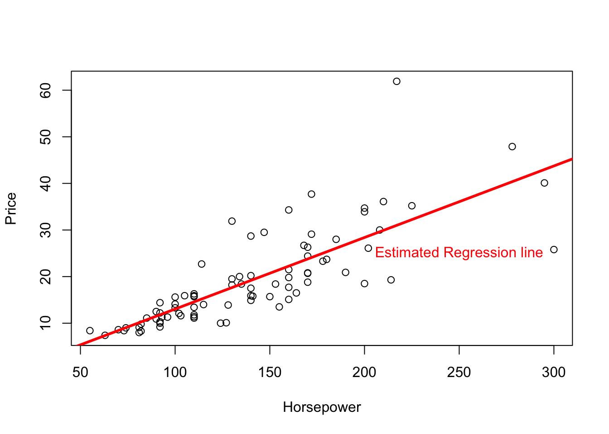
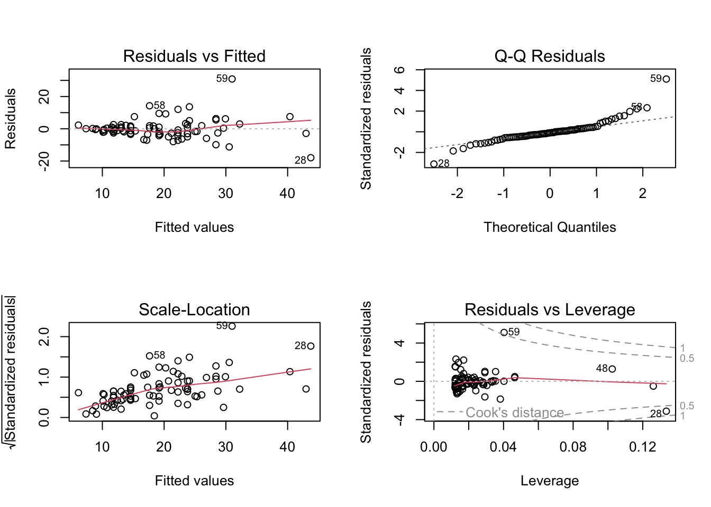
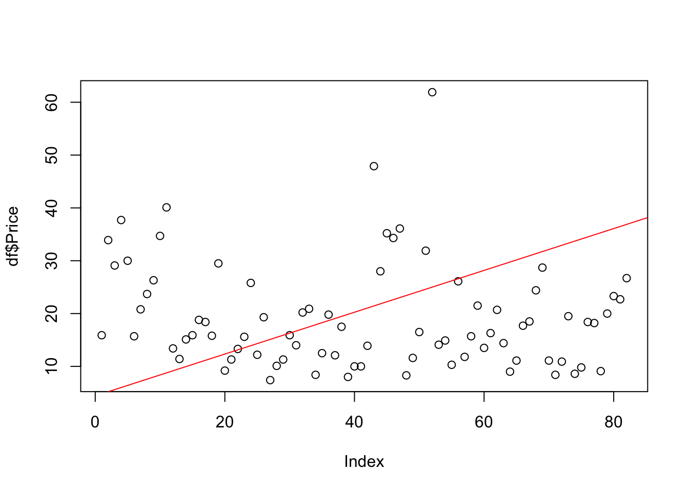
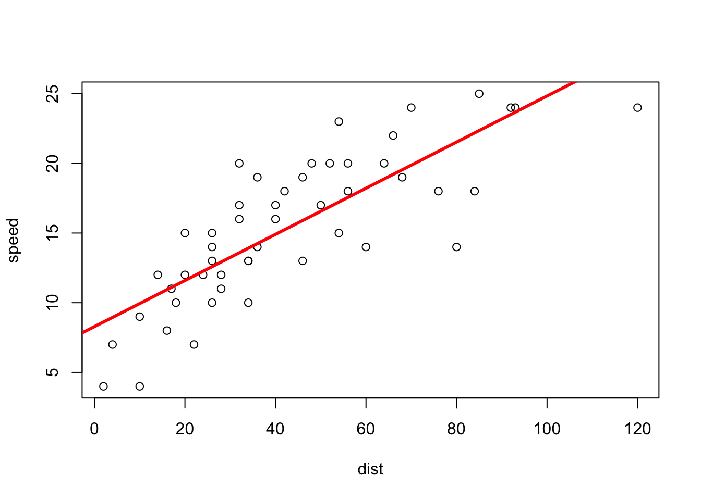
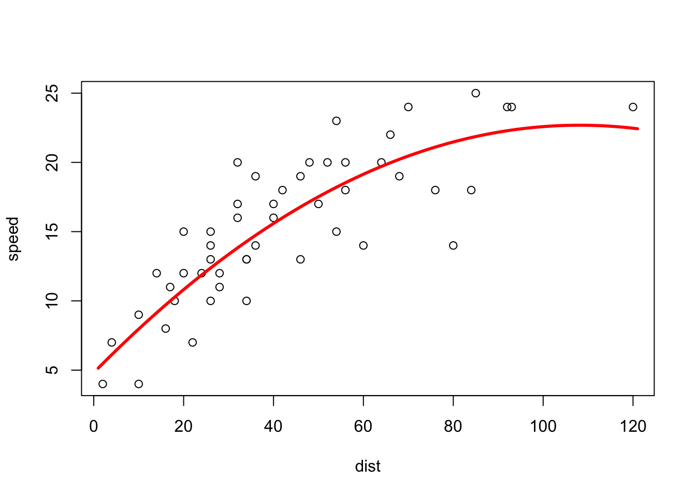

library(datasets)
aggregate(Petal.Length ~ Species, data = iris, FUN = mean) Species Petal.Length
1 setosa 1.462
2 versicolor 4.260
3 virginica 5.552The second midterm is based largely on being able to compute (log)likelihoods for different distributions, estimating the MLE parameters of such distributions and be able to fit regression models as well as producing relevant visualizations of estimated distributions and assessing visually the assumptions of linear models.
To carry out the most common tasks in data visualization we just need to remember about a few functions and how they work.
plot produces the plot of one or two variables. The structure can be specified either by passing two vectors as its x and y arguments or by specifying a formula of the form y~x along with a data argument containing the name of the dataframe containing columns y and x.boxplot produces the boxplot of a variable with the option of splitting it across grouping variable if a formula of the form y~x is passed where y is numeric and x is categorical.hist produces the histogram of a variable passed in as a vector. Set freq equal to FALSE to get a density plot on the y axis rather than a frequency plot. This is useful when we want to overlay other distributions on top of it.Then for what concerns summary statistics you can get a five-number summary of each numeric variable in the dataset along with their means by using summary , and then you can compute the standard deviation by using sapply(df[,cols], FUN = sd) where cols specifies the subset of numeric columns in the dataset. You can get these columns either by using a range of numeric values (i.e. 1:4) or by specifying specific non-adjacent columns (e.g., c(1,3) gets only the first and third column in the dataset)
If you want to compute some summary statistics only for the numeric variables but you want R to find those automatically for you can use the following syntax:
sapply(df[,sapply(df, is.numeric)], FUN = sd)
This code uses the inner sapply to find only the numeric columns in the dataset and subset the original dataset keeping only those, and then it uses the outer sapply to compute whatever function FUN is specified (in the example it is standard deviation.
This can be done easily using aggregate. Below is an example using the iris dataset.
library(datasets)
aggregate(Petal.Length ~ Species, data = iris, FUN = mean) Species Petal.Length
1 setosa 1.462
2 versicolor 4.260
3 virginica 5.552You just need to specify the numeric variable and the grouping variable, specify the dataset where they are stored, and then specify the statistic you want to compute for these subsets of the data.
When computing likelihoods you might be facing different scenarios. You might be asked to use already existing functions in R and embed them in a function we create. Alternatively, we might need to do some more work and start from the basics of how one would define mathematically a likelihood function and work up from there (binomial example with frequencies)
The basic setup for the first scenario is to create a function that automatically computes the negative log-likelihood so that it can be fed into the bbmle::mle2() function. We have a look at this first.
Read the dataset FirDBHFec_sum contained in the package emdbook.
1. Notice that for several observations of the dataset, the variable DBH has missing values; hence, clean the dataset of those observations.
library(emdbook)
FirDBHFec_sum <- FirDBHFec_sum[complete.cases(FirDBHFec_sum),]Plot a histogram of the variable DBH (1)
hist(FirDBHFec_sum$DBH)
Assuming that DBH are independent observations from a Gamma distribution, estimate the two parameters α and σ with the maximum likelihood method, using the package bbmle.
Feel free to use the command dgamma to compute it.
library(bbmle)Loading required package: stats4neg_log_likel <- function(alpha, sigma){
res <- -sum(dgamma(FirDBHFec_sum$DBH, shape = alpha, scale = sigma, log = TRUE))
return(res)
}
bbmle::mle2(neg_log_likel, start = list(alpha = 10, sigma = .9))
Call:
bbmle::mle2(minuslogl = neg_log_likel, start = list(alpha = 10,
sigma = 0.9))
Coefficients:
alpha sigma
10.3014908 0.8030027
Log-likelihood: -725.42 Now in this case we see that the estimated parameters for alpha and sigma are 10.3 and 0.8 respectively. Additionally, notice a few things:
dgamma and R automatically performs vectorized operations on each value of the DBH column. Basically, it produces a log probability for each value of DBH. For this reason then mle2 is capable of solving the optimization problemIn previous lectures we also solved exercises that were slightly different (see Geissler binomial example). One such examples is reported below and it often concerns exercises with discrete distributions and their associated frequencies:
We believe that the number of bites received by a subject follows a Poisson distribution of unknown parameter λ. Using the data.frame obtained in the previous point, write down the log-likelihood function of the parameter λ and find the maximum likelihood estimate of λ, and its 95%−confidence interval.
the first five rows of the dataset (df) are presented below:
head(df) n_bites freq rel_freq
1 1 1 0.006666667
2 2 8 0.053333333
3 3 11 0.073333333
4 4 21 0.140000000
5 5 18 0.120000000
6 6 17 0.113333333And the associated negative log-likelihood function associated to the solution is the one reported below
log_likel_freq <- function(lambda){
bites <- as.numeric(df$n_bites)
subjects <- df$freq
-sum(dpois(bites, lambda, log = TRUE) * subjects)
}
(ml_lambda <- mle2(log_likel_freq, start = list(lambda = 1)))
Call:
mle2(minuslogl = log_likel_freq, start = list(lambda = 1))
Coefficients:
lambda
7.439999
Log-likelihood: -426.52 From the example above we learn that when working with frequencies we want to multiply by the number of times a specific probability needs to be computed (e.g., multiply by the frequency each number of bites appears in the sample)
confint(ml_lambda, level = .95) 2.5 % 97.5 %
7.011991 7.885094 Make an appropriate plot showing the data, and the estimated probabilities.
Do you think that the proposed Poisson model is correct?
x <- seq(min(df$n_bites), max(df$n_bites))
y <- dpois(x, lambda = ml_lambda@coef)
hist(as.numeric(df$n_bites), freq = F, breaks = 5, ylim = c(0,.2))
lines(x,y)
We pretty much always use the lines() function to do this kind of work. Just need to specify an x,y numeric vector as its argument to use it.
We can fit linear models simply by using the lm function in R and specifying the variables of interests separating the dependent variable and the predictors by a ~.
library(MASS)
df <- MASS::Cars93[complete.cases(MASS::Cars93),]
head(df) Manufacturer Model Type Min.Price Price Max.Price MPG.city MPG.highway
1 Acura Integra Small 12.9 15.9 18.8 25 31
2 Acura Legend Midsize 29.2 33.9 38.7 18 25
3 Audi 90 Compact 25.9 29.1 32.3 20 26
4 Audi 100 Midsize 30.8 37.7 44.6 19 26
5 BMW 535i Midsize 23.7 30.0 36.2 22 30
6 Buick Century Midsize 14.2 15.7 17.3 22 31
AirBags DriveTrain Cylinders EngineSize Horsepower RPM
1 None Front 4 1.8 140 6300
2 Driver & Passenger Front 6 3.2 200 5500
3 Driver only Front 6 2.8 172 5500
4 Driver & Passenger Front 6 2.8 172 5500
5 Driver only Rear 4 3.5 208 5700
6 Driver only Front 4 2.2 110 5200
Rev.per.mile Man.trans.avail Fuel.tank.capacity Passengers Length Wheelbase
1 2890 Yes 13.2 5 177 102
2 2335 Yes 18.0 5 195 115
3 2280 Yes 16.9 5 180 102
4 2535 Yes 21.1 6 193 106
5 2545 Yes 21.1 4 186 109
6 2565 No 16.4 6 189 105
Width Turn.circle Rear.seat.room Luggage.room Weight Origin Make
1 68 37 26.5 11 2705 non-USA Acura Integra
2 71 38 30.0 15 3560 non-USA Acura Legend
3 67 37 28.0 14 3375 non-USA Audi 90
4 70 37 31.0 17 3405 non-USA Audi 100
5 69 39 27.0 13 3640 non-USA BMW 535i
6 69 41 28.0 16 2880 USA Buick Centurymy_lm <- lm(Price ~ Horsepower, data = df)
summary(my_lm)
Call:
lm(formula = Price ~ Horsepower, data = df)
Residuals:
Min 1Q Median 3Q Max
-17.9493 -2.8548 -0.6301 1.8289 30.8969
Coefficients:
Estimate Std. Error t value Pr(>|t|)
(Intercept) -2.32148 2.00202 -1.16 0.25
Horsepower 0.15357 0.01345 11.42 <2e-16 ***
---
Signif. codes: 0 '***' 0.001 '**' 0.01 '*' 0.05 '.' 0.1 ' ' 1
Residual standard error: 6.18 on 80 degrees of freedom
Multiple R-squared: 0.6198, Adjusted R-squared: 0.615
F-statistic: 130.4 on 1 and 80 DF, p-value: < 2.2e-16Then we can get a summary of the model to check some important statistics about it including the \(R^2\), the result of the F test for overall model significance and the t-test for the individual predictor significance.
par(mfrow = c(2,2))
plot(my_lm)
Then when we call plot on it we see a visual summary of the residuals to check if they violate any assumptions.
Also if we want to get the regression line to show in a specific plot containing the data we can use abline.
This only works in the case of simple regression where the output is composed of exactly one intercept and one slope parameter. We will see how to do this also in the case of a multiple regression, but we will use a different approach.
plot(Price ~ Horsepower, data = df)
abline(my_lm, col = "red", lwd = 3)
text(250,25,"Estimated Regression line", col = "red")
Let’s see the case of a multiple regression now:
my_lm2 <- lm(Price~Horsepower + Length, data = df)
summary(my_lm2)
Call:
lm(formula = Price ~ Horsepower + Length, data = df)
Residuals:
Min 1Q Median 3Q Max
-16.2229 -2.9482 -0.4636 1.8152 31.4554
Coefficients:
Estimate Std. Error t value Pr(>|t|)
(Intercept) -10.26441 9.40283 -1.092 0.278
Horsepower 0.14379 0.01759 8.174 4e-12 ***
Length 0.05084 0.05880 0.865 0.390
---
Signif. codes: 0 '***' 0.001 '**' 0.01 '*' 0.05 '.' 0.1 ' ' 1
Residual standard error: 6.189 on 79 degrees of freedom
Multiple R-squared: 0.6233, Adjusted R-squared: 0.6138
F-statistic: 65.37 on 2 and 79 DF, p-value: < 2.2e-16To produce a plot of this we first need to get predictions out of the model and those will be plotted along the original values. This is done by following these steps:
df_pred <- data.frame("Horsepower" = seq(min(df$Horsepower), max(df$Horsepower), length.out=100),
"Length" = seq(min(df$Length), max(df$Length), length.out = 100))
df_pred$predictions <- predict(my_lm2, df_pred)
plot(df$Price)
lines(df_pred$predictions, col = "red")
Notice that in the example above the columns in the new dataframe must be named exactly as the original columns that were used to fit the model, otherwise you’ll get an objectNotFound error out of it.
Even if it does not make much sense in this case we can try and fit a polynomial regression model by using the poly function.
my_lm3 <- lm(Price~poly(Horsepower,2) + Length, data = df)
summary(my_lm3)
Call:
lm(formula = Price ~ poly(Horsepower, 2) + Length, data = df)
Residuals:
Min 1Q Median 3Q Max
-14.4344 -3.2263 -0.2096 1.6007 31.1519
Coefficients:
Estimate Std. Error t value Pr(>|t|)
(Intercept) 14.54143 12.28573 1.184 0.240
poly(Horsepower, 2)1 68.32956 8.57593 7.968 1.09e-11 ***
poly(Horsepower, 2)2 -5.66526 7.04927 -0.804 0.424
Length 0.02527 0.06697 0.377 0.707
---
Signif. codes: 0 '***' 0.001 '**' 0.01 '*' 0.05 '.' 0.1 ' ' 1
Residual standard error: 6.203 on 78 degrees of freedom
Multiple R-squared: 0.6264, Adjusted R-squared: 0.6121
F-statistic: 43.6 on 3 and 78 DF, p-value: < 2.2e-16This model will use a degree two polynomial of Horsepower along with its degree one form. We can plot this out using the model same lines of code above.
anova(my_lm)Analysis of Variance Table
Response: Price
Df Sum Sq Mean Sq F value Pr(>F)
Horsepower 1 4979.3 4979.3 130.4 < 2.2e-16 ***
Residuals 80 3054.9 38.2
---
Signif. codes: 0 '***' 0.001 '**' 0.01 '*' 0.05 '.' 0.1 ' ' 1Here with anova we are testing simply the \(H_0\) that all estimated coefficients are 0 compared to the \(H_1\) being \(\neg H_0\) (at least one is not zero). A small enough \(p\) indicates that we can reject \(H_0\).
Here is an example where we can see how to overlay the plot of a polynomial regression line on top of the data.
library(datasets)
df <- datasets::cars
mylm <- lm(speed~dist, df)
summary(mylm)
Call:
lm(formula = speed ~ dist, data = df)
Residuals:
Min 1Q Median 3Q Max
-7.5293 -2.1550 0.3615 2.4377 6.4179
Coefficients:
Estimate Std. Error t value Pr(>|t|)
(Intercept) 8.28391 0.87438 9.474 1.44e-12 ***
dist 0.16557 0.01749 9.464 1.49e-12 ***
---
Signif. codes: 0 '***' 0.001 '**' 0.01 '*' 0.05 '.' 0.1 ' ' 1
Residual standard error: 3.156 on 48 degrees of freedom
Multiple R-squared: 0.6511, Adjusted R-squared: 0.6438
F-statistic: 89.57 on 1 and 48 DF, p-value: 1.49e-12plot(speed~dist, df)
abline(mylm, col = "red", lwd = 3)
We notice that the data would be better approximated by a polynomial regression so we try it out:
mylm3 <- lm(speed ~ poly(dist,2), df)
summary(mylm3)
Call:
lm(formula = speed ~ poly(dist, 2), data = df)
Residuals:
Min 1Q Median 3Q Max
-7.559 -1.722 0.473 1.932 5.942
Coefficients:
Estimate Std. Error t value Pr(>|t|)
(Intercept) 15.4000 0.4111 37.463 < 2e-16 ***
poly(dist, 2)1 29.8660 2.9067 10.275 1.33e-13 ***
poly(dist, 2)2 -8.9950 2.9067 -3.095 0.00332 **
---
Signif. codes: 0 '***' 0.001 '**' 0.01 '*' 0.05 '.' 0.1 ' ' 1
Residual standard error: 2.907 on 47 degrees of freedom
Multiple R-squared: 0.7101, Adjusted R-squared: 0.6978
F-statistic: 57.57 on 2 and 47 DF, p-value: 2.299e-13From the summary we see that the degree two term is significant so we want to keep this model. How do we plot the results of this model?
df_pred <- data.frame("dist" = seq(0,120))
df_pred$y_hat <- predict(mylm3, df_pred)First we create a dataset which stores the prediction that are made using the model. Then we overlay on the original plot the predictions obtained from the model.
plot(speed~dist, df)
lines(df_pred$y_hat, col = "red", lwd = 3)
And this is how we compare (visually) the original data to the predictions we get from the polynomial model.
We can also compare models by comparing their Adj. \(R^2\) (higher better), AIC (smaller better), BIC (smaller better) statistics.
AIC(my_lm, my_lm2) df AIC
my_lm 3 535.3641
my_lm2 4 536.5918BIC(my_lm, my_lm2) df BIC
my_lm 3 542.5843
my_lm2 4 546.2187summary(my_lm)
Call:
lm(formula = Price ~ Horsepower, data = df)
Residuals:
Min 1Q Median 3Q Max
-17.9493 -2.8548 -0.6301 1.8289 30.8969
Coefficients:
Estimate Std. Error t value Pr(>|t|)
(Intercept) -2.32148 2.00202 -1.16 0.25
Horsepower 0.15357 0.01345 11.42 <2e-16 ***
---
Signif. codes: 0 '***' 0.001 '**' 0.01 '*' 0.05 '.' 0.1 ' ' 1
Residual standard error: 6.18 on 80 degrees of freedom
Multiple R-squared: 0.6198, Adjusted R-squared: 0.615
F-statistic: 130.4 on 1 and 80 DF, p-value: < 2.2e-16summary(my_lm2)
Call:
lm(formula = Price ~ Horsepower + Length, data = df)
Residuals:
Min 1Q Median 3Q Max
-16.2229 -2.9482 -0.4636 1.8152 31.4554
Coefficients:
Estimate Std. Error t value Pr(>|t|)
(Intercept) -10.26441 9.40283 -1.092 0.278
Horsepower 0.14379 0.01759 8.174 4e-12 ***
Length 0.05084 0.05880 0.865 0.390
---
Signif. codes: 0 '***' 0.001 '**' 0.01 '*' 0.05 '.' 0.1 ' ' 1
Residual standard error: 6.189 on 79 degrees of freedom
Multiple R-squared: 0.6233, Adjusted R-squared: 0.6138
F-statistic: 65.37 on 2 and 79 DF, p-value: < 2.2e-16We can also compare models using anova. In this way we will always be testing the following two hypotheses:
\(H_0\): simpler model (less predictors) is better
\(H_1\): more complex model is better
anova(my_lm, my_lm2)Analysis of Variance Table
Model 1: Price ~ Horsepower
Model 2: Price ~ Horsepower + Length
Res.Df RSS Df Sum of Sq F Pr(>F)
1 80 3054.9
2 79 3026.3 1 28.638 0.7476 0.3899For instance, here we see that the \(p\) is not small enough to reject \(H_0\) and so we cannot say that the more complex model is better!
You can understand which model is the simpler one in the table simply by looking at the residuals degrees of freedom. Knowing that those are always equal to \(n-p-1\), where \(p\) is the number of predictors, helps in understanding that the lower residuals’ degrees of freedom will be always associated to the more complex model (i.e. the model with the higher \(p\))